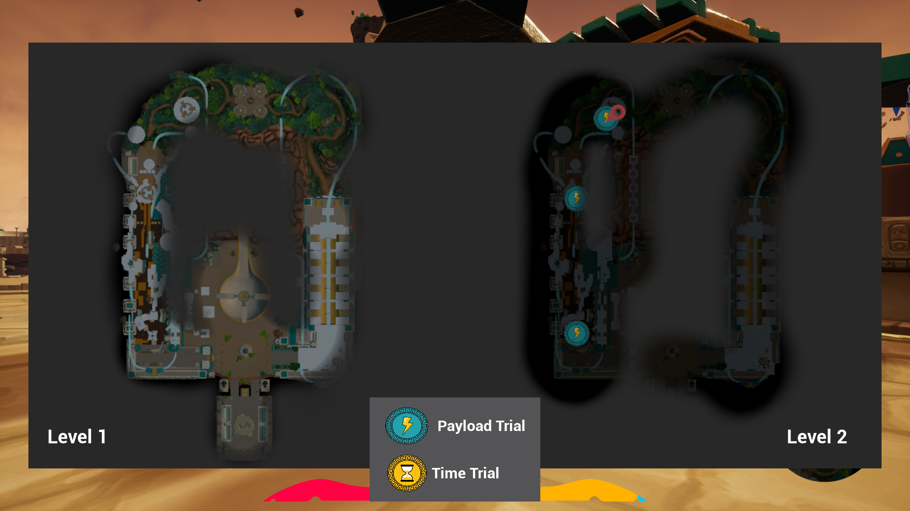

Izcalli of the WindGameplay/Tools ProgrammerAn action adventure Aztec inspired game where Izcalli is brought into the realm of the Wind God to help him repower his temple by navigating obstacles using her wind powered hoverboard. This is the capstone game for my masters program, we are working on this game for two semseters in a multidisciplinary team |
Final Game Demo |
Contributions~ Implemented directional paths using splines to add force on the player that we call slipstreams. The player can deposit and pull energy from the slipstream to change the force. The color of the slipstream represents how much energy the slipatream has. The level designers can easily adjust the starting evnergy, max force, and direction of the slipstreams
~ Created the magical energy material for the slipstream with parameters to adjust the textures, tiling, moving speed and direction, and color ~ Created a two level fog of war map and a minimap  ~ Implemented a payload trial challenge system that the level designers can adjust to make as many steps as they need and decide if the steps need to be filled sequentially or in any order ~ Created an environment system to restore the environment from a neglected form to an energy activated form when a trial is completed ~ Created an in-editor replay playtest tool using network replication ~ Created customizable neglected environment materials |
TeamProject Lead | Taylor Welling
Development Director | Mohammad Mustafa
Design Lead | Jarrett Rhodes Lead Level Designer | Nathan Kight Level Designer / Lighting Artist | Adria Llerena
Level Designer / Sound Designer | Amanda Megan Swiger
Programming Lead | Gaelen Dignan Programmer | Sandy Demian Technical Designer | Chesalon Taylor Technical Designer | Rohit Thakre Art Lead | Jason Richards Character 3D Artist | Michael Marte Animator | Sean McDermott Concept Artist / 3D Artist | Claudia Morell 3D Artist | Bianca Santimaw Rigger / Technical Artist | Destiny Nunn VFX / Technical Artist | Yolanda Patino |